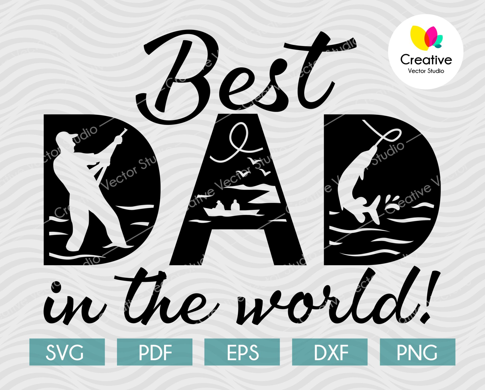
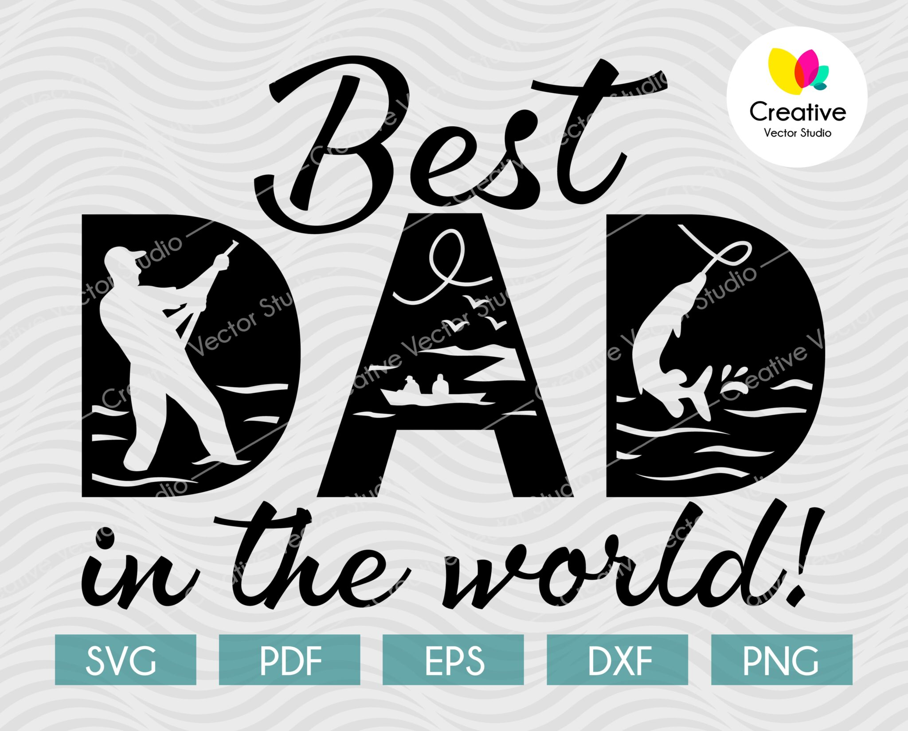

Paul
Mr Paul was born on 7th of November 1965 in Kericho.
Loyce
Mrs Loyce was born on 11th of November 1971 in Trans-Nzoia.
Mr Paul was born on 7th of November 1965 in Kericho.
Mrs Loyce was born on 11th of November 1971 in Trans-Nzoia.
My parents are not just figures in my life; they are the foundation upon which my dreams are built. Their love forms the bedrock of my existence, providing warmth and security even in the face of life's challenges. From the earliest moments of my childhood to the present day, their love has been a guiding force, shaping my perspective on relationships, compassion, and empathy.
Through the highs and lows, my parents have demonstrated unwavering resilience. Their ability to face adversity with grace and strength has been an invaluable lesson. Their stories of overcoming obstacles have become a source of inspiration, instilling in me the belief that challenges are opportunities for growth.
My parents are not just providers; they are reservoirs of wisdom. Their guidance has been a steady compass, navigating me through the complexities of life. Through countless conversations and shared experiences, they have imparted lessons that extend far beyond textbooks – lessons about integrity, kindness, and the importance of pursuing one's passions.
This tribute is a humble expression of gratitude to my parents – the guiding lights of my life. Their love, resilience, wisdom, and unwavering support have shaped me into the person I am today. As I journey through life, I carry with me the immeasurable gifts they have bestowed upon me, forever grateful for the privilege of calling them my parents.